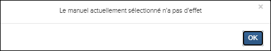
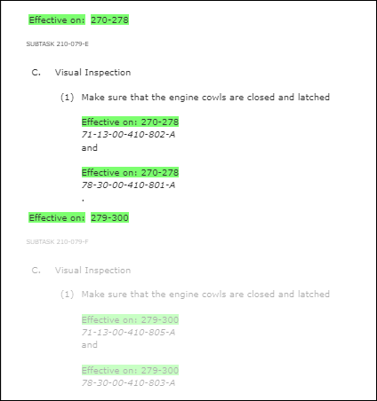
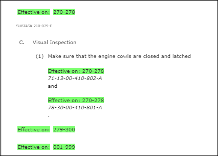
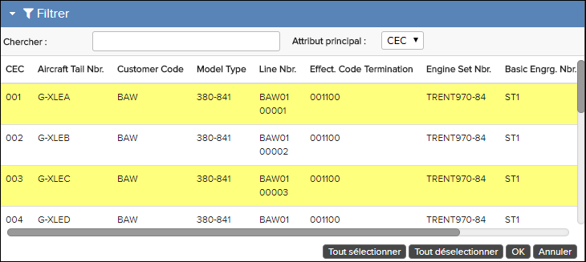
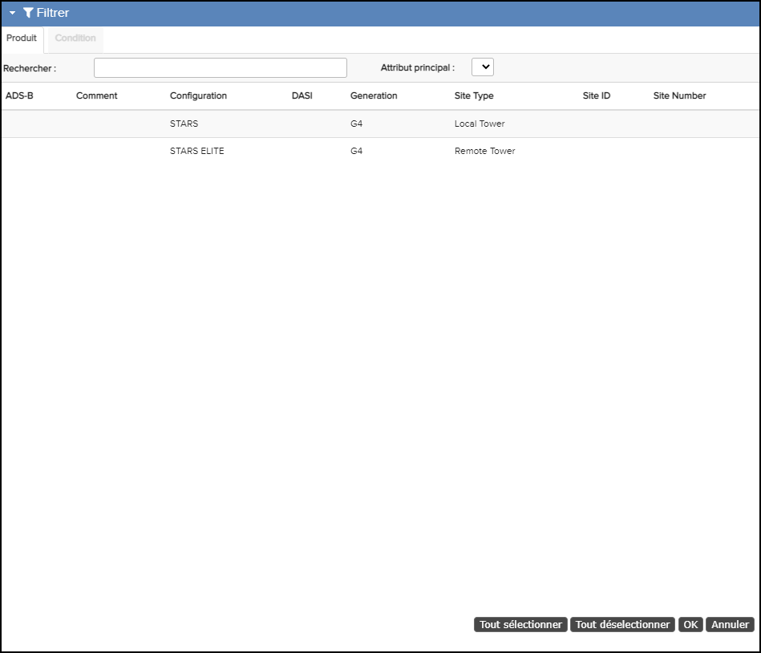
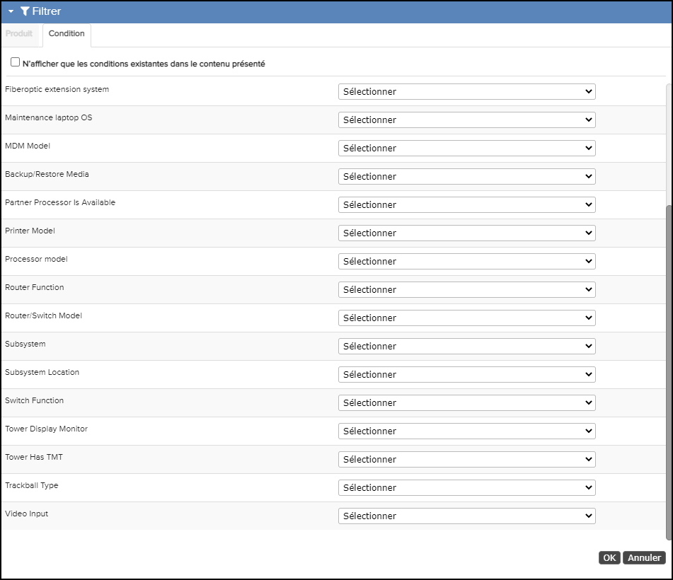

La fenêtre Filtrer est ouvert en cliquant sur l’icône dans la Barre d'action. Ce panneau vous permet de sélectionner un filtre (Applicabilité / Effectivité) qui cachera ou grisera le contenu non applicable pour le modèle qui vous intéresse. Vous pouvez configurer si vous souhaitez masquer ou griser le contenu qui n'est pas applicable. Se référer au "Client UI Configuration Options (Preferences)" sujet dans le Flatirons Pinpoint Configuration Guide pour les paramètres de configuration.

- Si le contenu affiché a plus d'un filtre d'applicabilité/efficacité appliqué à la
publication et que vous sélectionnez un filtre, le contenu non applicable pour le filtre
sélectionné est soit affiché (grisé), soit supprimé (masqué).Remarque : Dans les publications avec plusieurs filtres d'applicabilité/effectivité appliqués, l'icône Basculer le contenu filtréVoici des exemples de contenu affiché et supprimé:
 n'est active que lorsque vous sélectionnez un ou plusieurs
filtres. Cliquez sur l'icône pour supprimer ou afficher le contenu qui ne s'applique
pas au filtre sélectionné.
n'est active que lorsque vous sélectionnez un ou plusieurs
filtres. Cliquez sur l'icône pour supprimer ou afficher le contenu qui ne s'applique
pas au filtre sélectionné.Contenu non applicable – Affiché


Contenu non applicable - Supprimé
- Si le contenu affiché ne contient qu'une seule option d'applicabilité ou d'efficacité et que vous sélectionnez un filtre, le contenu non filtré est supprimé.
- Les résultats de la recherche incluent uniquement les résultats attendus du filtre sélectionné.
- Une fois que vous avez sélectionné un filtre, la table des matières n'inclut pas de contenu pour un nœud ne faisant pas partie du filtre.
- Si le résultat de la recherche est une publication différente dans la même structure de dossiers, l'efficacité reste active pour la publication d'origine et la nouvelle publication ouverte.
- Si le résultat de la recherche est une publication différente dans une structure de dossiers différente, l'efficacité est réinitialisée pour le nouveau dossier/la nouvelle publication ouverte.
- Si l'effectivité n'est pas définie sur TOUT, le texte d'effectivité spécifique s'affiche dans la table des matières.
Le filtre de recherche de texte libre dans le haut de fenêtre est pratique si vous avez beaucoup d'articles dans votre table. Le filtre couvre toutes les colonnes et effectue une recherche continue pendant que vous tapez.
Les informations de filtre affiché et les actions autorisées dans le panneau dépendent des données que vous filtrez. Pour les données ATA et A350, plusieurs filtres peuvent être sélectionnés en cliquant dessus. Au-dessous de la table, il y a aussi des boutons pour sélectionner / désélectionner tous les filtres.

La fenêtre Filtre, contexte ATA
Pour les données S1000D, il est possible de sélectionner seulement un filtre.

La fenêtre Filtrer, contexte S1000D

Onglet Condition
Lorsqu'une sélection appropriée a été faite, le filtre est réglé en cliquant sur le bouton OK.
Vous êtes ensuite redirigé vers la publication et les pièces qui ne sont pas applicables au modèle (ou les modèles) apparaissent soit grisées à l'écran ou ils sont complètement cachés en fonction de votre configuration. Le filtre sélectionné est également affiché sous la forme d'un texte de roulement dans la partie supérieure Barre d'action à côté de l'icône de filtre.
Votre administrateur peut appliquer des filtres d'effectivité pour les publications Airframe et Engine lorsqu'elles sont publiées avec un générateur KCA dans Data Manager. Administrateurs, reportez-vous au générateur KCA spécifique dans Flatirons Data Manager User Guide.
- Si une publication a une efficacité sélectionnée, seule la liste d'efficacité de cette publication s'affiche.
- Si une publication n'a pas d'effectivité définie, une liste d'effectivité vide s'affiche ou un message contextuel apparaît indiquant qu'il n'y a pas d'effectivité pour la publication.
- Si vous naviguez vers une autre publication de la même catégorie, l'efficacité sélectionnée s'applique à la nouvelle publication.
- Si vous naviguez vers une autre publication avec la même catégorie, mais que la nouvelle publication ne contient pas le produit sélectionné, un message contextuel vous invite à sélectionner une effectivité différente.
- Si vous naviguez vers une autre publication avec une catégorie d'efficacité différente, un message contextuel vous demande si vous souhaitez continuer avec la publication sélectionnée.
Le tableau qui suit décrit les différents composants de la fenêtre Filtre.
| Elément | Description |
|---|---|
| Produit Onglet Remarque : Uniquement pour
S1000D
|
Vous permet de voir les champs Recherche et Attribut principal. . |
| Condition Onglet Remarque : Uniquement pour
S1000D
|
Vous permet de voir une liste de conditions et pour chacune, vous pouvez sélectionner une valeur unique ou non filtrer en fonction de cette condition. |
| Recherche | Filtre de recherche de texte libre. Couvre toutes les colonnes et effectue une recherche continue pendant que vous tapez. |
| Caractéristique principale | Affiche l'attribut principal pour filtrer le contenu. L'attribut primaire dépend de la configuration du filtre pour les données affichés. Pour les données de l'avion,c'est généralement un CEC dans un contexte ATA et MSNBR, Shipnumber, Modelmark ou Tailnumber dans un contexte S1000D. |
| Table de filtrage |
Le tableau répertorie tous les filtres disponibles pour la publication sélectionné. Toutes les colonnes peuvent être triées en cliquant sur l'en-tête de colonne. Un ou plusieurs filtres peuvent être sélectionnés en cliquant dans le tableau. Lorsqu'un filtre est sélectionné, il est mis en surbrillance (jaune). Pour certains types de données (ATA et A350), vous pouvez également utiliser les boutons Tout sélectionner ou Tout déselectionner au-dessous de la table. |
| Tout sélectionner | Sélectionnez tous les filtres dans le tableau. (Visible uniquement pour les données ATA et A350). |
| Tout déselectionner | Désélectionner tous les filtres dans le tableau. (Visible uniquement pour les données ATA et A350). |
| OK | Cliquez sur ce bouton pour activer un filtre sélectionné. |
| Annuler | Annuler l'opération et revenir au publication. |